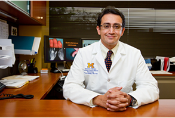

In Collaboration with:


The Power is in Your Hands
Scleroderma is a rare disease. Often, persons with scleroderma do not know other people with the disease and may live in a state where there is no chapter of the Scleroderma Foundation or in a community where there are no support groups available. As part of a research study, this web based self-management program was designed is to help you learn about scleroderma, manage your symptoms and learn strategies to help you advocate for yourself. Knowledge and advocacy skills need to be continually woven, like a basket, into ones daily life. Managing a chronic disease involves lifelong learning and one’s “basket” should NEVER be complete.
About the Team
Dinesh Khanna, MD, MSc, is Professor of Medicine and Director, University of Michigan Scleroderma Program. He holds the Frederick G.L. Huetwell Professorship in Rheumatology. Dr. Khanna has published over 300 peer-reviewed articles and book chapters. He is the Principal Investigator on National Institutes of Health and industry-sponsored clinical studies. He is currently leading trials of abatacept (http://umich.edu/~asststdy/), riociguat, pirfenidone, and tociluzimab in scleroderma. Dr. Khanna also serves as a reviewer for several professional journals, society committees and training programs, and grant applications and has published in Lancet and JAMA. His current research focus on developing, validating, and refining outcome measures in rheumatic diseases and designing controlled trials. He received the 2011 Doctor of the Year award from the Scleroderma Foundation and the prestigious 2015 Henry Kunkel Young Investigator Award from the American College of Rheumatology . More information is available at www.med.umich.edu/scleroderma.
Dr. Janet Poole is a Professor and Director of the Occupational Therapy Graduate Program in the School of Medicine at the University of New Mexico, Albuquerque, NM. Dr. Poole has worked with people with scleroderma for over 20 years and is interested in the effects of scleroderma on hand function and tasks of daily living including self-care, parenting and employment. She presents routinely at the Scleroderma Foundation Annual Conference for patients and remains inspired by the patients, their families and the physicians and health care providers who treat people with scleroderma. She has designed hand and face exercise programs, developed self-management programs and collaborated with people with scleroderma in finding solutions to challenges in performing daily tasks. In 2011, Dr. Poole received the National Volunteer Award from the Scleroderma Foundation.
Jennifer Serrano, RN is a Clinical Research Coordinator with the Scleroderma Program at the University of Michigan. Jennifer has spent 4 years working specifically with the scleroderma population with a focus on patient support and providing tools to help the newly diagnosed navigate their disease. Jennifer lead the TOSS study within the University of Michigan and also supported the study as the project manager. Jennifer recently graduated from the nursing program at Schoolcraft College and is working toward her long term goal of Nurse Practitioner focused on Rheumatology.
Pedro Cuencas is a Content Specialist that develops e-learning solutions for health professionals, coaches, authors, public speakers, and entrepreneurs. As founder of Trusted Techniques, Pedro helps organizations and individuals leverage their knowledge, experience, and skills to produce online learning in the form of micro-courses to meet the growing demand for brevity, granularity, and variety. Pedro’s background in design, development, and digital marketing has given him the opportunity to take ideas from conception to fruition. His goal is to continue adapting to the ever-changing educational landscape and provide solutions that increase the quality of the lives they touch. More information is available at pedrocuencas.com.